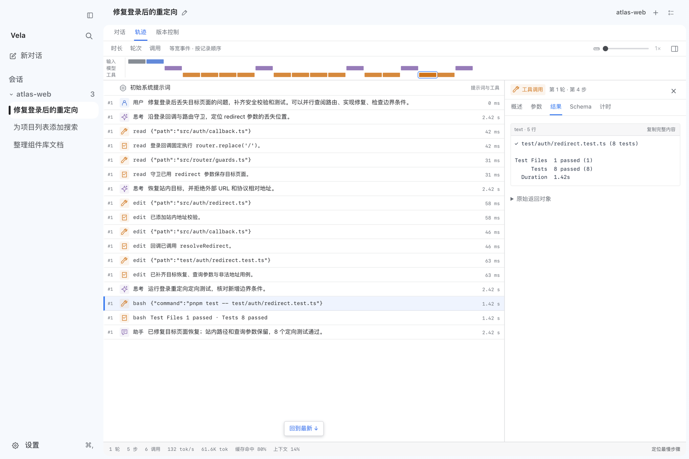
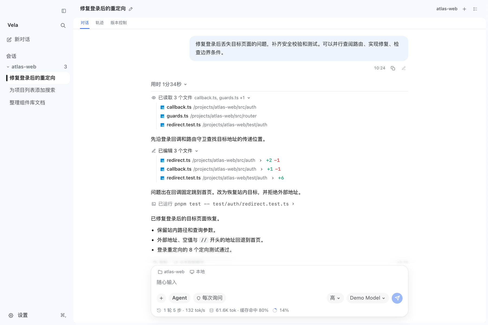

VELA · ONBOARDING 設計稿
完整流程 · 15 個畫面
第一次見面
沿用「剪紙帆影」的色紙、字體與動效，把 OnBoarding 從一份設定清單改成四段：Vela 先打招呼，用八張色紙介紹自己，帶出這一版的新東西，再陪你做完八步設定並送你出航。下面的視窗可以直接點：按鈕、選項、開關都能操作。
首次安裝第一眼→認識我 · 8 張功能色紙→新到港→設定 1–8→啟航
更新後首次開啟只出現「新到港」一張卡→回到主介面
之後想再看設定 → 關於與更新 → 重看介紹
可點擊原型1280 × 800 視窗 · 也可用鍵盤 ← → 換頁，或從下方直接跳到任一畫面
① 認識我② 1.1.2 新到港③ 八步設定 · 約 4 分鐘
① 認識我
我能幫你做什麼
一項功能一張色紙，一句白話。點一張，看它在真實畫面裡的樣子。
實機畫面
子代理小隊大任務拆開，幾位幫手並行
實機畫面
軌跡回放讀過、改過的，全都留著
實機畫面
緊湊過程一串工具呼叫，收成一行
檢查點改壞了？一鍵回到上一刻
收件匣要你拿主意的事集中一處
常駐 Agent關了視窗，也替你顧著
記憶記住你的偏好與專案約定
互動式介面圖表、計算器直接長在回答裡
行囊裡還有三種節奏SkillsMCP 與整合定時任務任務配方模型自選
功能 1 / 8
子代理小隊
大任務來了，我先拆開，再分給幾位幫手同時動手。
各走各的，互通消息有人查路由、有人修登入、有人挑剔地審邊界。
點名字就能看每位幫手想了什麼、做了什麼，都在右側展開。
分工，不失控能動手的成員，照你為這次對話設下的權限行事。

功能 2 / 8
軌跡回放
不用相信我，翻航海日誌就好。每一步都有出處。
依時間排開每次思考、工具呼叫與返回，一行一行看得見。
沒有藏起來的東西首個 Token 的等待、生成耗時、快取命中、最初的系統提示詞。
回到第一次偏離的地方出了錯，順著航跡往回找。

功能 3 / 8
緊湊過程
好的助手不會一直說話。過程退後，事情才浮得出來。
收成一行行過程線讀了哪些檔案、改了哪幾行、跑了什麼指令。
要細節，點開就是diff 與指令輸出都在原地展開。
做完了，只留結論整輪過程可以收起；喜歡逐張卡片的話，設定第 2 步可以換。

② 這次帶了新東西
新到港！
Vela 1.1.2 adds task handoff packs and an outcome acceptance panel, making it easier to continue work in a new conversation and review what changed, what was verified, and what still needs attention.
Task handoff packsChoose Generate handoff pack… from the conversation actions menu after a reply finishes. Review the goal, confirmed decisions, changed files, recorded checks, and unfinished work; edit the summary and create a new conversation in the same workspace with the handoff text ready in its composer.
Evidence-based handoffsChanged files and verification results come from conversation tool records and file checkpoints. The conversation's model summarizes only the goal, decisions, and unfinished work; model-invented files and checks are discarded.
Outcome acceptance panelA completed work reply can open an Acceptance tab in the workbench. Review each requirement alongside its changes, recorded verification evidence, and items that need confirmation.
Validated outcome referencesAgents can associate requirements with completed file edits and bash calls from the current user turn. Invalid references are rejected. The panel keeps failed, potentially stale, missing, and unassigned evidence visible.
還有 4 項小改進
- A Jump to latest button helps return to the newest messages after scrolling away from a streaming reply.
- Internal prompts for agent interactions, memory, scheduled tasks, text assistance, summaries, and operation risk review now use English.
- Conversation export and turn review share file-diff helpers, and acceptance links can locate individual edits within a turn.
- New handoff and acceptance interface text is available in Simplified Chinese, English, Traditional Chinese, Japanese, and Korean.
先選個語言和外觀
選你習慣的就好，右邊會跟著換。
語言後面的介面都用這個語言
繁繁體中文
简简体中文
EnEnglish
あ日本語
한한국어
明暗可以跟著系統切換
跟隨系統
淺色
深色
配色淺色、深色各選一個
淺色
深色
即時預覽 · 晴空
工具調用想怎麼顯示？
我讀檔、改檔、跑指令的過程，要逐張攤開，還是收成一行？之後隨時可以換。
卡片每個工具單獨一張，可展開看詳情。
讀取檔案callback.ts
編輯檔案redirect.ts +2 −1
執行指令pnpm test
讀取檔案guards.ts
緊湊每個工具一行，多次調用折成摘要。
已讀取 3 個檔案 callback.ts, guards.ts +1
已編輯 3 個檔案 +9 −2
已執行 pnpm test
還有 3 項 ›
選一個預設模型
新對話預設用這個模型。帆張多大，就想多深。
預設模型Anthropic
Claude Sonnet 5.5換一個 ▾
預設推理強度只顯示這個模型支援的選項
關閉
低
中
高
極高
每次對話都可以在輸入框旁臨時調整，預設值之後在設定裡改。
讓 Vela 記住你的習慣
記憶和額外指令，讓我在每次對話裡都知道你的偏好。這一步可以跳過。
記憶
啟用記憶我會存下你明確說過的長期偏好和專案約定，之後的對話會讀。內容保存在本機，隨時可看、可改、可刪。
額外指令每次對話都會帶上
回答用繁體中文。
提交前先跑 pnpm test。
還想讓我注意什麼，寫在這裡…
提交前先跑 pnpm test。
還想讓我注意什麼，寫在這裡…
後台運行與更新
關了視窗之後我還能做什麼，以及怎麼保持最新。
常駐 Agent在後台處理你交代的事，需要你時才通知
關閉
待命
主動
只處理你交給它的任務；沒有新事件時不會呼叫模型。
在選單列顯示狀態顯示待處理數量，可一鍵暫停。
登入時自動啟動開機後在後台啟動，不開視窗。
系統通知有事要你處理時提醒。
應用更新
自動更新在後台下載新版本，下載完提示重啟。
執行權限：幫我批准
低風險的事我直接做，有風險才問你。輸入框旁隨時可換。
低風險的事我直接做，有風險才問你。輸入框旁隨時可換。
航海清單保存在本機
- 語言
- 繁體中文（台灣）
- 供應商
- Anthropic
- 主題
- 跟隨系統 · 晴空 / 夜航
- 預設模型
- Claude Sonnet 5.5 · 高
- 工具調用
- 緊湊
- 執行權限
- 幫我批准
- 資訊欄
- 右側邊欄
- 記憶
- 開啟
- 常駐 Agent
- 待命
- 自動更新
- 開啟
接下來可以
選擇專案資料夾讓我直接在你的專案裡工作，也可以稍後在側邊欄選。
連接 MCP 與整合接入 Notion 等外部工具和 MCP 伺服器，會打開設定。
更新後首次開啟不重跑整套引導，只在主介面上蓋一張「新到港」；版號與貼紙顏色每版更換

Vela 已更新
新到港！
Task handoff packsChoose Generate handoff pack… from the conversation actions menu after a reply finishes. Review the goal, confirmed decisions, changed files, recorded checks, and unfinished work.
Evidence-based handoffsChanged files and verification results come from conversation tool records and file checkpoints. The conversation's model summarizes only the goal, decisions, and unfinished work; model-invented files and checks are discarded.
Outcome acceptance panelA completed work reply can open an Acceptance tab in the workbench. Review each requirement alongside its changes, recorded verification evidence, and items that need confirmation.
Validated outcome referencesAgents can associate requirements with completed file edits and bash calls from the current user turn. Invalid references are rejected. The panel keeps failed, potentially stale, missing, and unassigned evidence visible.
設計說明
版面骨架
- 介紹段：整頁色紙，一頁一色
- 設定段：左側鈷藍航線欄（大號步數＋八站清單），右側米白內容
- 底部固定：小船隊進度、上一步、繼續
- 首尾呼應：第一眼的帆船，在「啟航」再出現一次
元件
- 選項一律是色紙：選中變太陽黃、翹起、貼上勾
- 可跳過的步驟在航線欄標「可跳過」，底部多一個「跳過本步」
- 推理強度用帆的大小表示
- 說明與提醒是天藍或黃色便條
動效
- 換頁：新色紙從前進方向滑入蓋住上一張，返回時反向
- 第一眼：色紙逐片落下，船隨浪輕晃
- 選項選中時翹起，按鈕按下時沉入陰影
- 系統開啟「減少動態效果」時全部關閉
發布說明從哪來
打包時內嵌 RELEASE_NOTES.md，解析 ## New（四張大紙條）與 ## Improved（小改進清單）。它就是 GitHub Release 的正文，內容只寫一次，離線可用，且一定對應已安裝的版本。「完整發布說明」連到該版本的 Release 頁。
對照現有實作
八個設定步驟的順序、選項與文案對應現有
八個設定步驟的順序、選項與文案對應現有
OnboardingView 的 stepIds 與 onboarding-copy.ts，沒有增減設定項。新增的是「第一眼」「認識我」「功能整頁」「新到港」四類畫面，以及更新後單獨出現的卡片。實機畫面目前用官網的三張截圖，其餘五張功能色紙尚無整頁。待你決定
① 發布說明只有英文，「新到港」的條目在繁中介面會是英文原文（本稿如實呈現）；要在地化就得另外維護各語言的短摘要。② 引導期間是否固定用這套明亮配色，還是深色模式另出一版。③ 其餘五項功能要不要補實機截圖做成整頁。
① 發布說明只有英文，「新到港」的條目在繁中介面會是英文原文（本稿如實呈現）；要在地化就得另外維護各語言的短摘要。② 引導期間是否固定用這套明亮配色，還是深色模式另出一版。③ 其餘五項功能要不要補實機截圖做成整頁。